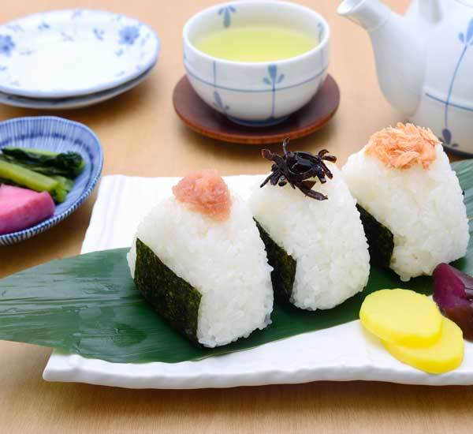

Onigiri Rice Balls

Description
Ingredients
per 1 onigiri rice ball:
- 65g cooked japanese rice
- 1/4 sheet nori seaweed
- pinch of sea salt
- shiso perilla leaf (optional)
- sesame seeds (optional)
possible fillings:
- cooked chicken
- cooked salmon
- umeboshi
- tuna with mayo
- tsukemono japanese pickles
- tempura shrimp
Steps
- Begin by cooking the Japanese rice according to your favourite method.
- With a small amount of salt sprinkled on your hands, mould the rice into small balls or triangles approximately 8cm wide.
- Create a small well in the centre of the rice and put in your choice of ingredients. Then mould the rice with your hands around the well to cover your filling completely.
- Using a sheet of nori seaweed, wrap up your ball of rice.
- Sprinkle some sesame seeds or cut up shiso leaves to put on the rice for a little extra flavour (optional). Enjoy for a snack or during lunch.
- Stir cooked sausage and marinated shrimp into the skillet with the cooked vegetables. Turn off the heat and set aside.